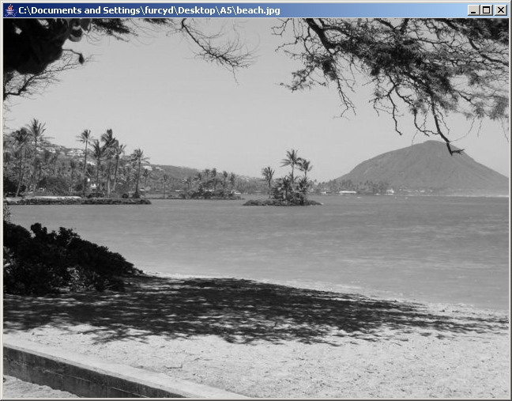

CS 262 - Fall 2020 -
Assignment #1
Part 4: Converting to grayscale
Back to the main assignment page
In order to convert a picture to grayscale, you simply need to change
the color of each pixel in the following way: Compute the average
value of the three components and set each of the three color
component values to this average value. Implement the
convertToGrayscale() method that performs this
transformation.
Calling your method on this picture:
should produce the following picture:

What is the effect of successive invocations of this method on the same picture and why?
Back to the main assignment page